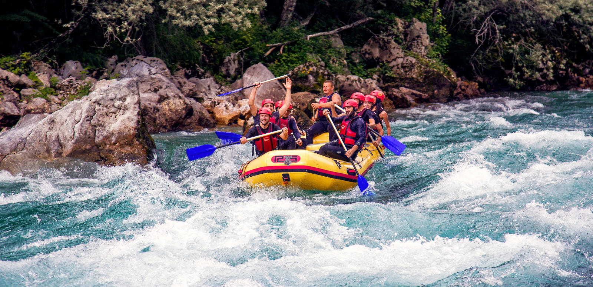
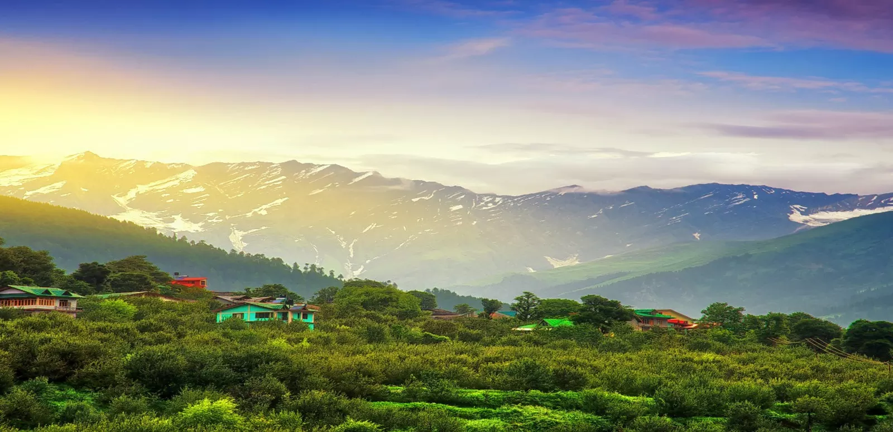

RISHIKESH
Known as the vibrant city Rishikesh is one place which has a lot of things to offer in its bosom. Also known as the ‘Yoganagari’ or the ‘Yoga Capital of the Country’ and the ‘Gateway to the Garhwal Himalayas’, this quaint city is known for its bountiful beauty, sanctity, adventure options and the magnificent places to visit in Rishikesh.
MANALI
I know this is the place you have been definitely searching for. Well, here it is, with the snow-capped mountains, cascading waterfalls and the serene valleys Manali is one of the best tourist places in India. Be it for the fellow mates or solo explorers, this course surpasses some other hiking trips in India! Passing mountains and towns, passing individuals who are continuing on ahead in a more basic manner what will get you acknowledge both nature and straightforwardness
LADAKH

Trying to hide away in the bosom of nature, well here is you call. Just don’t wait and get lured away to this exotic destination on earth. Make your bond stronger with your best friend as you visit Ladakh one of the most visited tourist destination in India.Ladakh or the Land of High Passes is an infertile yet excellent district situated in the north Indian condition of Jammu and Kashmir.
DELHI
There is always a history buff in all of us which is dying to come out at one point or another. Let the glimpse of history touch your soul, the political aura make you powerful and the winds of north tingle your spine. And if you are with your best friends then here you go. This is definitely one of the best places to visit in India
JAIPUR

Whether you are out for an energizing outing or for some experience Jaipur is a definitive city for you. Warmly alluded to as the Pink City due to the pink dividers and structures of the old city, draws guests with its shocking reminders of a former period. The most prominent Jaipur attractions and spots to visit are the antiquated royal residences and fortifications, with intricate engineering that serves as a shining indication of their illustrious legacy
NAINITAL
Enclosed by the volcanic emerald Lake Nainital is one of the largest towns and is one of the most talked about place.It involves a lofty forested valley around the namesake lake Naini. And if you are travelling with your best friends this is just the place for you.For explorers, it’s a simple spot to kick back and unwind, eat well, and go horse riding or paddling on the lake., Nainital is set in a valley containing a pear-molded lake, roughly two miles in boundary, and encompassed by mountains and is blessed with the best scenic views